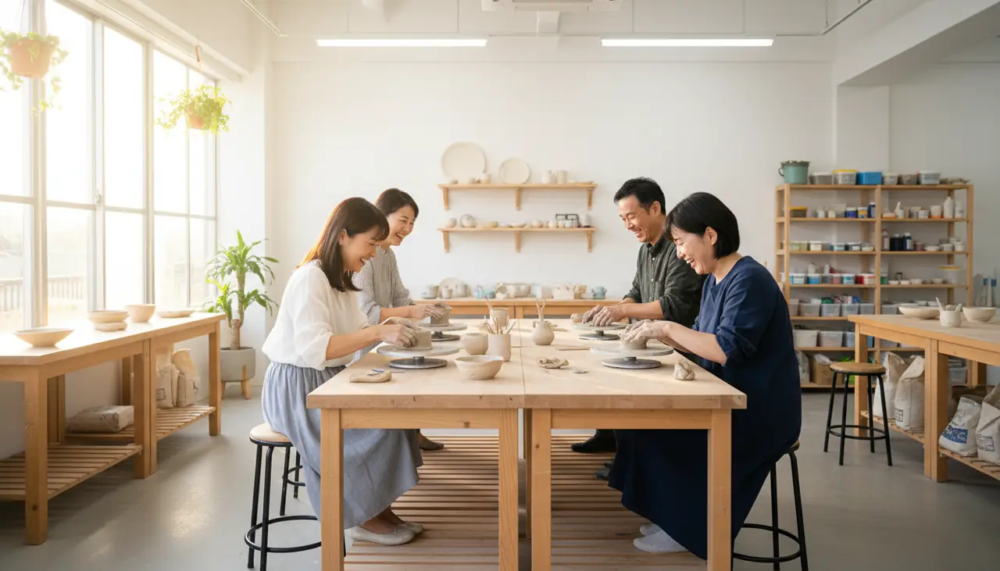

公的機関・学会・原著へ戻れる。
厚生労働省、健康日本21関連、公的研究機関など一次情報・準一次情報を優先し、記事内またはページ末尾から確認できるようにします。
健康情報は「それらしく書く」だけでは不十分です。何を根拠にし、何を断定せず、どこから先を医療へ渡すのか。その境界を公開します。

厚生労働省、健康日本21関連、公的研究機関など一次情報・準一次情報を優先し、記事内またはページ末尾から確認できるようにします。
チェックは生活習慣と自覚症状を整理するためのもので、病気の有無や治療方針を判定しません。
「運動不足」と決めつけると危険な場面があるため、赤信号となる症状を別ページで明示します。
古い数字だけが残らないよう、公的資料の更新を確認し、重要な変更があれば本文と出典を見直します。
今後当事者の体験を掲載する場合は「一人の経験」であることを明示し、一般的な医療・健康情報とは区別します。
健康サイトを、
怖さでも、若返り幻想でも売らない。
身体を「衰えるもの」ではなく、変化を読み取れる地図として扱う。
動きは飾りではなく、視線を「現在地→行動→再測定」へ誘導するために使う。
劇的な改善を約束せず、続けられる小さな行動を価値として見せる。
本サイトの内容は一般的な健康情報の提供を目的としており、個別の診断・治療・処方を行うものではありません。症状、既往歴、服薬、健康状態によって適切な対応は異なります。不安がある場合は医師その他の有資格医療専門職へ相談してください。